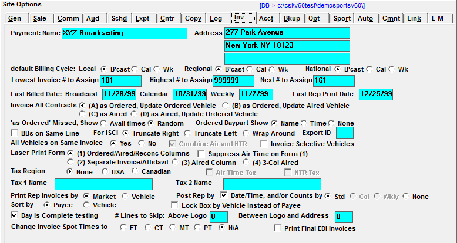
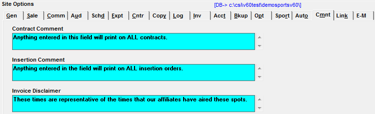
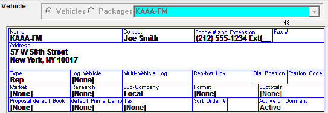
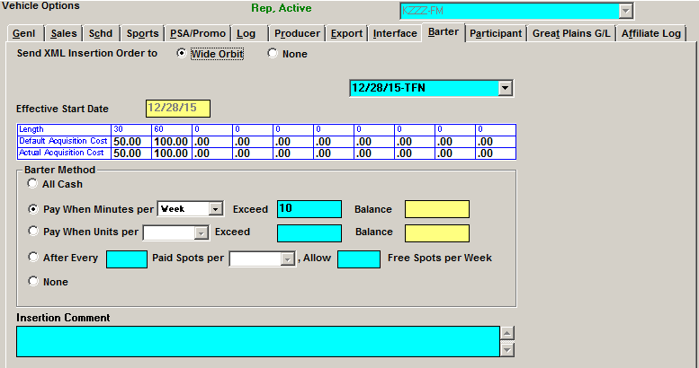
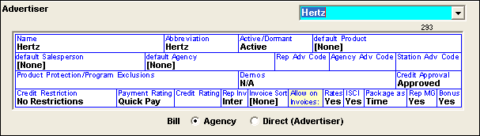

Rep Setup
Site Options Setup
Options Tab
System Options
In the System Options section, check on Rep and Barter if applicable.
Schedule Line Overrides
Allocation %: This is a feature for Rep Buys only. This allows you to enter the Rep Vehicle’s revenue percentage they will receive. If the rep percentage is a standard fee, the % amount is entered in the Vehicle->Options->Participant screen; if it changes for each buy it is entered in the Acquisition field. (This is not yet implemented.)
Acquisition Cost: If checked (version 7.0 and prior), you can attach an acquisition cost, or the rate the network must pay the vehicle, for the spots ordered. This cost is different from the rate the advertiser sees, and will appear on the insertion order. To enable acquisition costs on version 7.1 and above, the “Barter” option must be checked on as described above.
Sales Options
Market Based: If checked, and Markets are defined for each vehicle, when entering the Proposal, Order, Spot, and Log Screens you can select only those vehicles that are within certain markets
If Rep vehicles exist and Market is used, the Market can show total spots on the invoice
Insertion Address from Payee/Site (Invoices)/Vehicle: This question determines the address that will appear on the insertion order.
- Payee: This will print the Agency’s address on the insertion order.
- Site (Invoices): This will print the Network’s address as defined in Traffic Site Options->Invoices.
- Vehicle: This will print the vehicle’s address as defined in the Vehicle Options->General Screen.
Show Spot Prices on Insertion Orders for $0 Acquisition Costs: If checked, the insertion order will display the air time spot cost or NTR item rate if the acquisition cost is $0.
Export Tab
Using Rep Codes: If checked on, you will be able to enter a Rep Agency code to identify agencies in accounting exports
Invoice Tab

- Last Billed Date and Last Rep Print Date: These invoice dates need to be defined during the initial setup, and will then update automatically during invoicing.
- Print Rep Invoices by Market or Vehicle: If using Rep vehicles, determine whether you wish to print Rep Invoices by Market (vehicle group) or by individual vehicles.
- Post Rep by Date/Time and/or Counts by Std/Cal/Wkly/None: Prior to printing Rep invoices, you must post the rep spot counts or times depending on the way this question is answered.
- Post Rep by Date/Time and/or Counts by Std: This allows you to post the exact dates and times each rep spot aired.
- Std/Cal/Wkly/None: These options allow you to post a spot count rather than an actual time. You can post by Standard broadcast calendar, monthly, or weekly.
- When “Weekly” (“Wkly”) is selected, when posting rep counts by vehicle, a “Station Invoice Number” field is shown on the Post Log screen that can be used to enter a station invoice number, which will appear on the Barter Payment report and Barter Payment export.
Comments Tab
Any comments that are entered in the insertion comment will automatically appear on the Insertion orders.

Vehicle Setup
The Rep Vehicle is the station or program that will be airing your commercials.
Main Screen

- Set the Vehicle Type to “Rep”.
- The Rep vehicle should have the contact, phone number and fax number defined for the supporting Rep Reports
Vehicle Groups
A Vehicle Group is an identifier to group vehicles together. The ‘vehicle groups’ that can be defined are Market, Format, Research and Subtotals. These groups are ways to classify vehicles together for reporting purposes.
- Market is the area that this vehicle is reaching.
- Research is Rated, Non-Rated or Suburban.
- Sub company is a way to group together vehicles whose accounting revenue should be reported together.
- Format is the type of vehicle it is. Comedy, AOR, etc.
- Subtotals are a further way of classifying together a group of vehicles for reporting purposes.
Barter Options
The Barter screen allows you to set the acquisition costs and terms between your network and your rep stations, which will be defaulted in the acquisition field in proposal/orders, and calculated in net-net reports.

Set the “Send XML Insertion Order to” setting to “Wide Orbit” to include this rep vehicle on the output of the Station XML/Contract Insertions XML export (run from the Orders screen). For more information about this export, please see the Traffic Exports help document that is available on the Counterpoint website.
Previously created terms can be viewed by selecting it from the dropdown menu near the top of the screen. New Terms are created by selecting New from the dropdown menu, then entering a start date for the Barter agreement in the “Effective Start Date” field, along with the default acquisition cost for each spot length used. The default acquisition cost will be used by default as the acquisition cost when creating lines for this vehicle on Proposals and Orders, and will be deducted on net-net reports. If the default acquisition cost is different from the actual spot cost, the actual acquisition cost can be entered in the actual acquisition cost field for each spot length used.
Determining the Barter Method
There are five methods available:
- “All Cash”: is used when you pay for every spot booked with the station.
- “Pay When Minutes per Week/Month/Year Exceed X”: is used if a certain amount of minutes per week, month or year have no cost, but additional minutes over the agreed upon limit per week, month or year must be paid. (The balance field is used to track the balance for “per year” terms and is updated automatically when running the Barter Payments report for the first time for a month.)
- “Pay When Units per Week/Month/Year Exceed X”: is used when there is a certain amount of free units per week, month or year, but the acquisition cost must be paid when the number of units exceed the agreed upon amount. (The balance field is used to track the balance for “per year” terms and is updated automatically when running the Barter Payments report for the first time for a month.)
- “After every X paid spots per week/month/year, allow Y free spots per week/month/year”: is used if you receive a certain amount of free spots for a certain amount of spots purchased. For example, after setting it to “every 3 paid spots per week, allow 1 free spot per week”, that would mean if there were eight spots for the week, six would be paid and two would be free.
- “None”: all the spots are free (no acquisition cost applied).
Insertion Comment
The insertion comment can contain any pertinent information about the Barter agreement, and will appear on the insertion order for the station. Each vehicle can have a unique Insertion Comment.
Participant Options
The Participants determine how the revenue for a vehicle is shared. The first Participant is considered the ‘Owner’ of the show. Some Accounting reports show revenue for the Owner which would be this first participant for the vehicle. All reports listed for the Producer Accounting allow you to see the revenue as it is shared between participants. Any reports that have selectivity by vehicle groups allow you to select Participant as an option. This option will list each participant and show the revenue share for that participant.
Owner option reports:
- Billed and Booked sort option owner
- Sales Commission option to sort within salespeople by owner
- Aging by Vehicle option to show owner
- When the Sales Source is “ASK” the invoice program breaks out the participant share and updates A/R with separate transactions. When it is not “ASK” the other reports that break out participants use the percentages defined in the table.
Sales Source
The Sales Sources determine how the revenue for a vehicle is updated. The Sales Source is assigned to a Salesperson that is on the order. All management reports will break out the revenue by sales source.
Invoice Update has five choices for the Sales Source. They are:
- Receivables - Will update the amount to A/R
- History - Will invoice the amount and update it into the history receivables.
- Export + History - Will invoice the amount, automatically create an export and update it into the history receivables.
- Export + A/R - Will invoice the amount, automatically create an export and update it into the current A/R.
- Ask by Vehicle
Advertiser Billing Option
The question, “Rep Invoice” determines if the invoice for this client will be produced externally by the affiliate or Internally by you. This question will determine if the accounts receivables will be updated (internal) or if the revenue history will be updated (external) when Gen Rep is run.

Advertiser MG Option
The "Rep MG" advertiser option is used to indicate if the advertiser allows makegoods or not. If Rep MG is defined as "Yes", then the Prior Missed spots will be considered makegoods, and billed, when extra spots air for future months the order is airing in. If Rep MG is defined "No", then any extra spots will be considered bonus.
An asterisk in front of the contract number on the Posting Screen means the advertiser does not take makegoods.